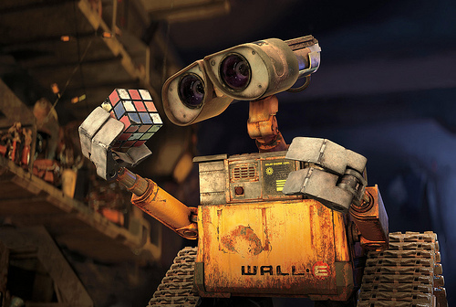
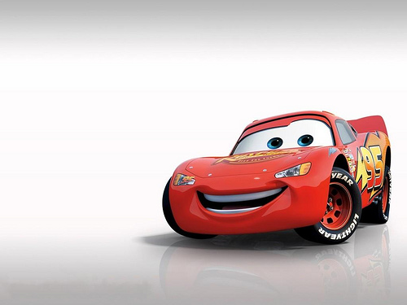
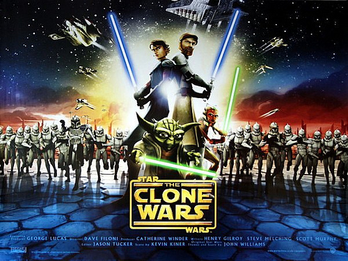

2013/05/25
スターウォーズEpisode7
ディズニーがスターウォーズを買収。エピソード７は、ディズニーキャラクターが出る！？
エピソード７の内容がYoutubeにアップロードされました。上の動画がそうです。
な、なんと、C-3POとR2-D2のコンビにウォーリーが参加してトリオに！

ファルコン号も、よく見るとカーズのマクイーンになっているし・・・。

もちろんこれは冗談です。
実際のエピソード７は、こんなことには多分なりません。
この動画は、外国の方がウォールトディズニーに買収されたスターウォーズをもじって作ったフェイク動画です。
なかなかの出来栄えの動画をだったので、紹介しました！
2015年の劇場公開が楽しみですね。
Episode３シスの復讐とEpisode4新たなる希望との間にある約２０年間の話がテレビアニメシリーズで放送

エピソード７が公開する前に、スターウォーズの新テレビアニメシリーズが２０１４年に全米で放送が開始することが明らかになったと
ハリウッド・レポーター紙が報じたようです。
日本での放送は、まだ未定ですが、映画についでこれもどんな話になるのか楽しみですね。

エピソード２とエピソード３との間でも、テレビアニメシリーズがありましたね。
この話とのつながりも気になるところです。